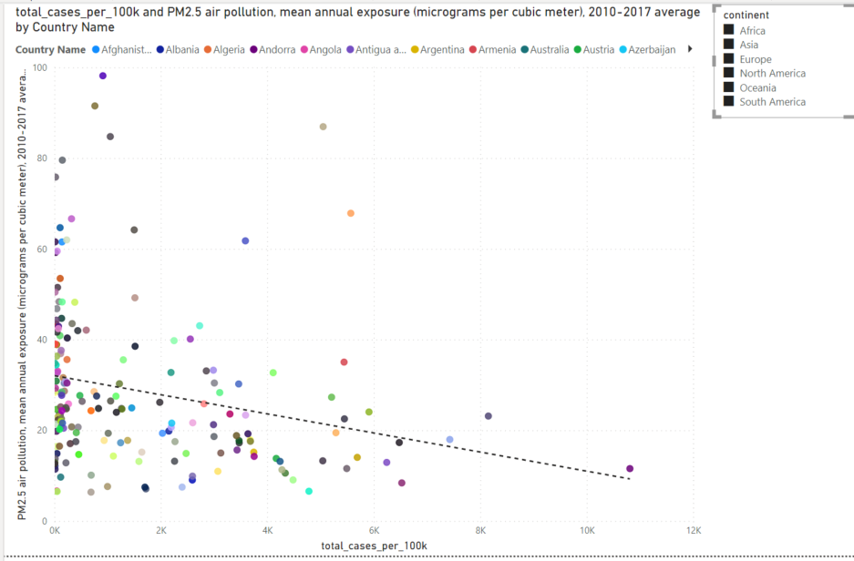
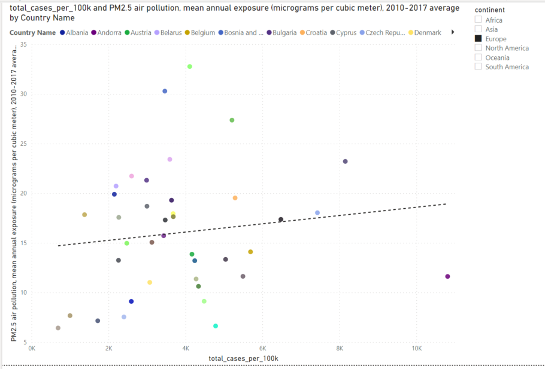
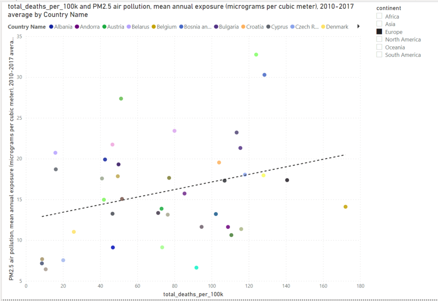
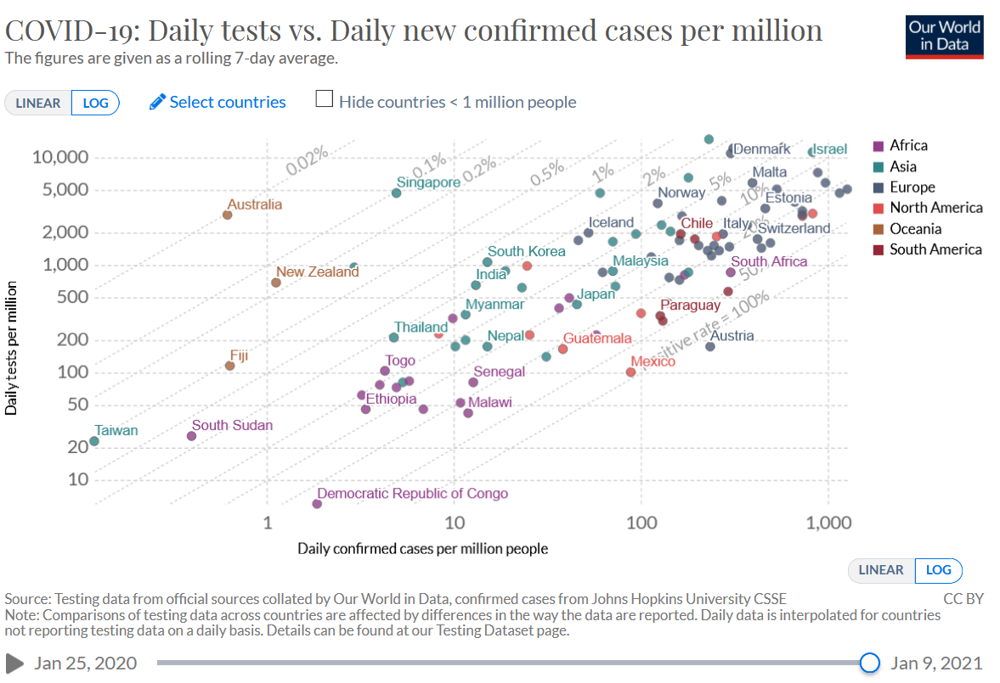

The incidence and death rate of COVID-19 has varied significantly between states, regions and even localities. Some factors that explain these differences have been known very early into the pandemic: The age distribution of populations, mobility, population density or medical preconditions such as diabetes or obesity.
Medical professionals and scientists have been researching whether there are also contributing environmental factors that cause COVID19 to spread faster or pose a higher risk to specific populations. New research coming out of that effort in 2020 indicates that air pollution could contribute to higher numbers of COVID19 deaths. The following video by the World Health organisation explains the medical basics about why air pollution can be an underlying risk factor for COVID-19.
Most prominently, a study from the Harvard T.H.Chan School of Public Health found that "a small increase in the long-term exposure to PM 2.5 leads to a large increase in the COVID-19 death rate". PM2.5 refers to particulate matter (also called particle pollution) of a specific size: 2.5 micrometers and smaller. For context, think about a single hair from your head. This is on average 70 micrometers in diameter, making it 30 times larger than the largets fine particles. Let's have a look on a country-by-country basis first.
    Go back to the main page